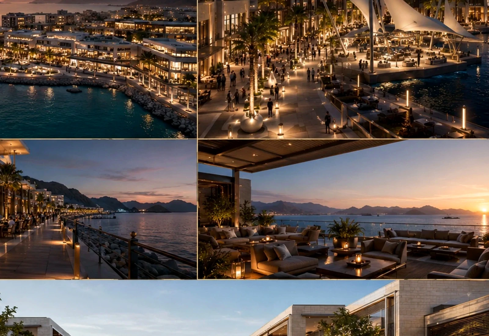
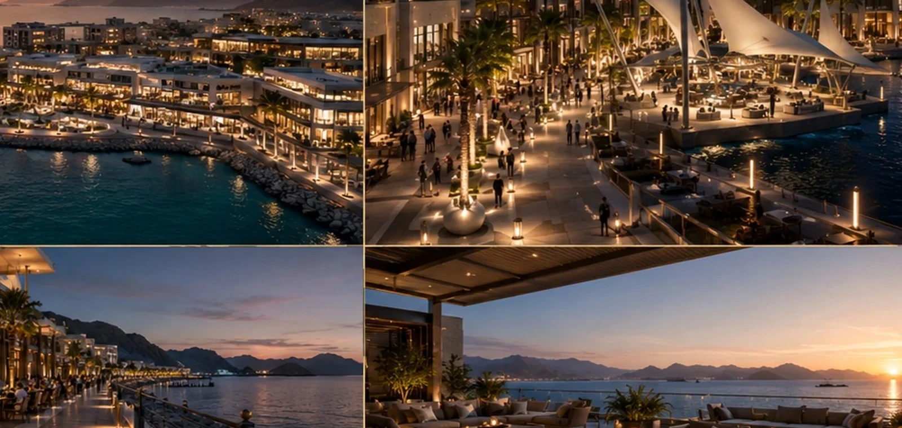
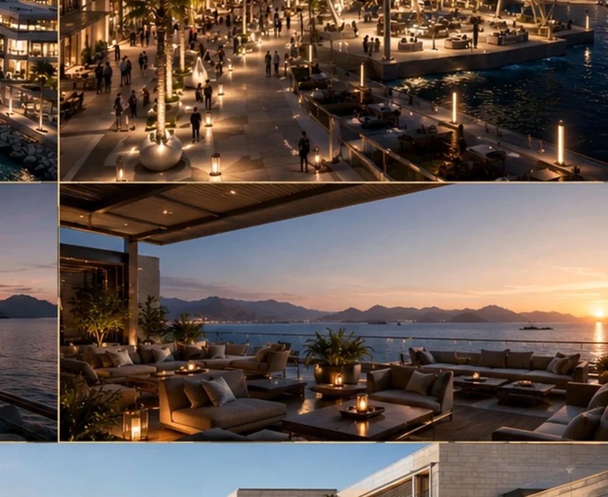
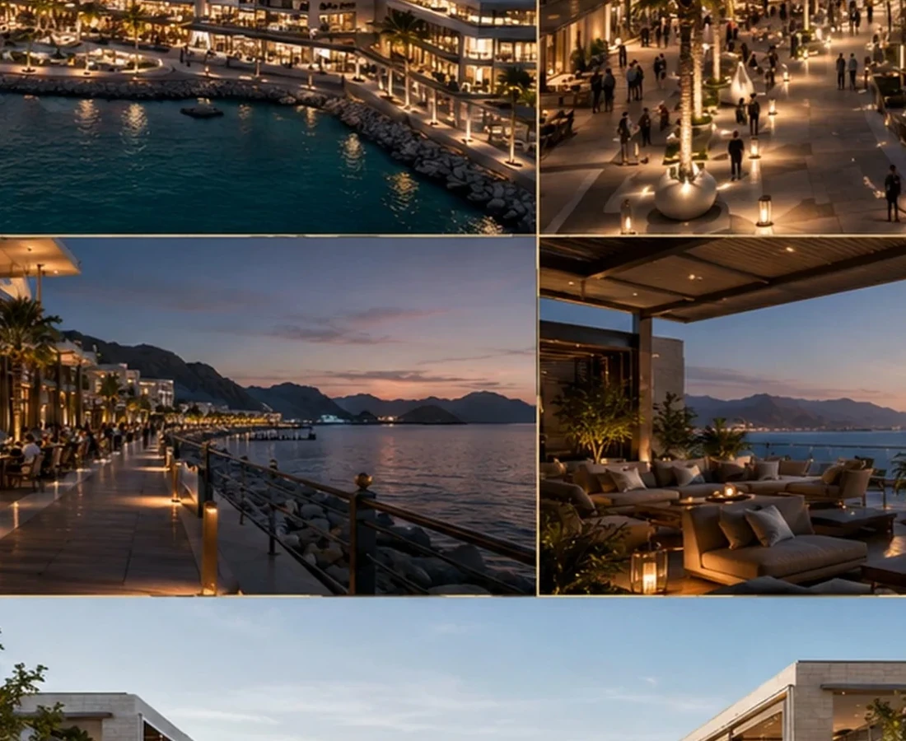

A Waterfront Destination That Treats the Water Edge as the Main Asset.
Terraces, shaded promenades and hospitality-led public spaces keep views, movement and social life continuously connected to the waterfront.
LocationMuscat, OmanYear2021TypologyHospitality & Retail / Lifestyle Center

A CASE OF THINKING
READ THE PROJECT AS A SEQUENCE OF DEVELOPMENT DECISIONS.
The fields below form BADR's standard case-study lens. Project-specific commercial claims should be replaced only when they are supported by the project record.
THE DEVELOPMENT QUESTION
How can the waterfront create value throughout the entire visitor journey rather than only at the front row?
THE GOVERNING IDEA
Make the water edge the organiser of movement and experience.
THE DESIGN RESPONSE
Terraces, shade and public-space sequencing keep activity connected to views and the promenade.
THE SIGNATURE
A continuous relationship between architecture, public life and water.
WHY IT MATTERS
The site’s strongest natural asset becomes part of the entire development experience.
Design Direction
A project identity shaped by place, typology and experience.
The project treats the water edge as the main spatial asset, organizing movement and social spaces to keep views, shade and activity continuously connected.
Project narrative is based on the supplied BADR portfolio record and visible design material.



A New Development Opportunity
Your Site Deserves a Development Strategy Before It Becomes a Drawing Package.